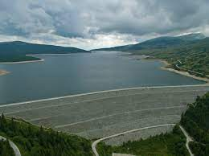

Каскадата Белмекен
Каскадата „Белмекен-Сестримо-Чаира“ е водноелектрическа каскада в България, която е най-голямото и сложно хидротехническо съоръжение в страната. Разположена е в източната част на Рила, главно на територията на област Пазарджик.
Изградена на етапи между 1964 и 1999 година, тя събира води от най-горните части на водосборните басейни на реките Марица, Струма и Места с обща водосборна площ от 458 квадратни километра. Водите се отвеждат към система от язовири, за да бъдат използвани за производство на електроенергия, напояване и водоснабдяване. Системата включва два пояса от събирателни деривации, три язовира и два изравнителя, две помпено-акумулиращи водноелектрически централи (ПАВЕЦ) и две други водноелектрически централи (ВЕЦ).
Хидровъзел „Белмекен“ Най-високата част от каскадата е горният пояс от събирателни деривации, които улавят води от част от водосборните басейни на реките Марица (45%), Места (32%) и Струма (23%) с обща площ 219 квадратни километра. Тя включва:[4]
Събирателна деривация „Грънчар“ – събира води от горните водосбори на десните притоци на Места – Черна Места, Бела Места и Белишка река, както и води от притоци на Струма, прехвърлени чрез допълнителните канали „Благоевградска Бистрица“, „Илийна“ и „Манастирски“
Събирателна деривация „Джаферица“ – събира води от леви притоци на Места и от Чаирска река
Събирателна деривация „Марица 1900“ – събира води от водосбора на Марица
Обратно към главната страница